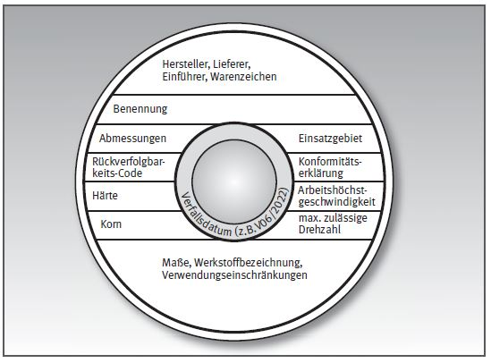
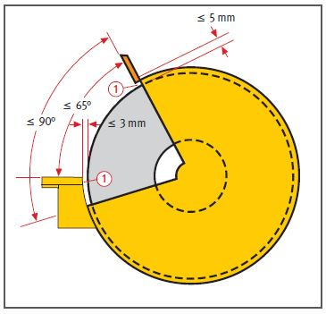
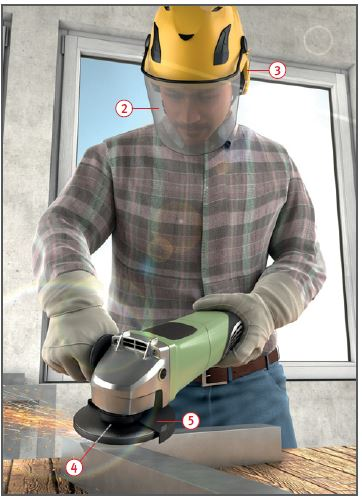

Anforderung an die Kennzeichnung (beispielhafte Darstellung)

Gefährdungen
- Personen können von wegfliegenden Teilen und zerspringenden
Schleifkörpern getroffen werden.
- Die Augen sind durch Schleiffunken
besonders gefährdet.
Schutzmaßnahmen
- Nur gekennzeichnete Schleifmaschinen
und Schleifkörper verwenden.
- Zulässige Arbeitshöchstgeschwindigkeit
entsprechend der Kennzeichnung beachten.
- Entsprechend der auszuführenden
Arbeit den richtigen Schleifkörper auswählen.
- Vor dem Aufspannen Klangprobe
vornehmen.
- Schleifkörper ordnungsgemäß
aufspannen und gleich große,
zur Schleifmaschine gehörende
Spannflansche verwenden.
Der Mindestdurchmesser der
Spannflansche richtet sich nach
dem Bohrungsdurchmesser im
Schleifkörper. Gegebenenfalls
elastische Zwischenlagen
verwenden.
- Schleifkörper und Spannwerkzeuge
auf erkennbare Mängel überprüfen. Probelauf durchführen; dabei sich seitlich
außerhalb des Gefahrenbereiches aufhalten.
- Drehzahl der Maschine mit der
zulässigen Umdrehungszahl des
Schleifkörpers vergleichen; sie
darf nicht höher sein als die des
Schleifkörpers.
- Schleifwerkzeuge, die nicht
für alle Einsatzzwecke geeignet
sind, müssen mit entsprechenden
Verwendungseinschränkungen
(VE) gekennzeichnet sein.
- Schleifkörperbohrungen nicht
durch Reduzierringe oder Vergießen verkleinern.
- Wechseln bzw. Aufspannen
von Schleifkörpern nur von unterwiesenen Personen ausführen lassen.
- Schleifscheiben nicht über das
Verfallsdatum hinaus benutzen.


- Schutzhaube und Werkstückauflage entsprechend der Schleifkörperabnutzung regelmäßig nachstellen
 .
.
- Schutzbrille bzw. Gesichtsschutz
 und Gehörschutz
und Gehörschutz  benutzen.
benutzen.
- Bei länger andauernden Schleif arbeiten sowie beim Bearbeiten von gesundheitsschädlichen Stoffen ist eine geeignete Absaugung zu verwenden
- Beim Schleifen von Leichtmetallen (z. B. Aluminium, Magnesium) besteht Brand- und Explosionsgefahr!
- Beim Absaugen von Schleifstäuben aus brennbarem Leichtmetall dürfen nur spezielle, für diesen Zweck geeignete Absaugeinrichtungen verwendet werden.
Zusätzliche Hinweise für Handschleifmaschinen
- Zum Aufspannen nur gleich
große, zur Maschine gehörende
Spannflansche
 verwenden
und mit Spezialschlüssel
aufspannen. Probelauf
durchführen.
verwenden
und mit Spezialschlüssel
aufspannen. Probelauf
durchführen.
- Handschleifmaschinen nur mit Schutzhauben verwenden
 .
.
- Bei zylindrischen Schleiftöpfen
(Topfscheiben) Schutzring der Abnutzung entsprechend nachstellen.
- Maschinen stets beidhändig
führen. Schleifgeschwindigkeit nicht durch starkes Andrücken vermindern.
- Werkstück vor dem Bearbeiten sicher festlegen.
- Beim Arbeiten sicheren Standplatz einnehmen.
- Am jeweiligen Einsatzort ermitteln, ob eine Brand- und Explosionsgefährdung vorhanden ist, und bei Bedarf geeignete Maßnahmen ergreifen.
- Maschine bestimmungsgemäß entsprechend der Betriebsanweisung des Unternehmers, bzw. der Bedienungsanleitung des Herstellers, benutzen.
Arbeitsmedizinische Vorsorge
- Arbeitsmedizinische Vorsorge
nach Ergebnis der Gefährdungsbeurteilung
veranlassen (Pflichtvorsorge)
oder anbieten (Angebotsvorsorge).
Hierzu Beratung
durch den Betriebsarzt.
07/2021